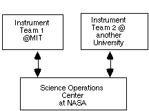
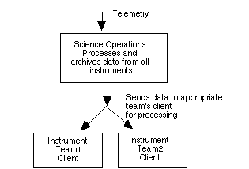
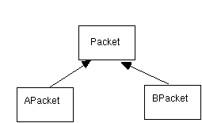
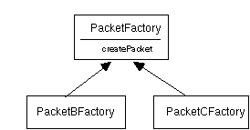
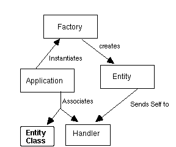

Organizational issues play a significant role in many software architectures, though often more as a side effect than by design. This paper presents a pattern language for developing ground software for satellite telemetry systems that illustrates how to take organization into account in the architecture. In particular, this paper addresses:Since scientific research satellite systems are often developed at academic institutions, where similarities between ongoing projects exist only at the architectural level (code typically cannot be reused), documenting architectural insights such as these in the pattern form can be a very practical way to achieve reuse. Since assembly of telemetry involves (re)creation of objects from a serial stream, these patterns are relevant to designers of any systems which creates objects from a serial stream
- extending a pattern from the 1995 PLoP conference [Berczuk95] into a pattern language.
- assembling patterns from other pattern languages into a domain specific pattern language, and
- including social context as a motivating context for a pattern.
As an example of how these issues can be addressed, this paper presents a pattern language to guide the development of a ground based system that will process telemetry data from an earth-orbiting astronomical observatory. Systems of this type involve many diverse, and often geographically distributed groups of people; such a system is challenging to design from a social as well as a technical point of view.[1] The patterns present in this system are applicable to other systems that have similar organizational constraints. Since telemetry can be considered a form of persistence, where objects are serialized into a stream and transmitted, some of these patterns will also be of interest to builders of systems that use parsing and reconstruction of objects from a serial data stream.
This pattern language makes use of Coplien's patterns of organization [Coplien95][2] as context for the other patterns, and also shows how to effect some of these patterns in the context of a ground based scientific telemetry processing system.
After a description of the relevant elements of the organizatonal structure of a typical project, patterns which address some of the issues raised by this structure will be described.

Typical Project Organization

Typical Architecture
The operations center depends on the instrument teams for providing details about telemetry specific to each instrument.
Each of the teams has very different motivations; the instrument teams are focused on getting the best science from "their" instruments, and the operations team is focused on getting the system assembled (with science often a secondary consideration). The teams have a large degree of autonomy, but they must agree on certain interfaces. As a result, a minimal amount of coupling is best[4]. A major challenge in designing an architecture of such a system is to handle the organizational and political issues that arise, in such a way that individual organizations are not overly affected by external forces.
The general organizational forces involved in scientific satellite telemetry processing systems can be summarized as follows:
While this paper discusses patterns found in a scientific satellite application, the patterns have applications to other domains as well.
* Facilitate autonomous development: Loose Interfaces
* Interpret a Data Stream: Parser/Builder
* Divide responsibilities for interpretation: Hierarchy of Factories
* Connect Systems: Handlers
Problem: Communication is difficult. If requirements are changing and the teams are located in a variety of places then the poor communication can stall a project. This can be particularly problematic when an organization does not have an architectural center, such as specified by Architect Controls Product [Coplien95].
This is particularly applicable in a research satellite application where teams are small, requirements are changing, and the potential for gridlock is great if dependencies are too high. The operations center is the organizational center of the architecture, but does not always have the capability to design a complete system. To avoid development bottlenecks, we need to be able to limit the effect one team's work will have on another.
Therefore: Limit the number of explicit, static, interfaces. Use loose interfaces like Callback and Parser/Builder and Hierarchy of Factories to achieve this.
Decoupling interfaces in this way will also simplify the development of Early Program [Beck], since it provides a mechanism for building incremental systems. It can also facilitate implementation of Developer Controls Process [Coplien95], by making it easy to define features that can be controlled by a developer or group.
Problem: Given a data stream, we want to interpret it, classifying the elements into the appropriate class of object. The data stream contains tags that can be used to identify the raw data, and we want to convert the stream into object form, so we can process the data.
As a non-telemetry related example consider the problem of reading in raw UNIX files and classifying them into types of files based on their "magic number" --as in the tags in the /etc/magic file. You could create the appropriate subclass of File and then invoke its virtual edit() method, bringing up the appropriate editor.
In a telemetry processing system each telemetry packet has identifying information in its header. The telemetry processing system design requires that an object, once created, knows how to process itself (i.e., we will not use a dispatch table, or a switch on type-- this is to satisfy the Organization Follows Location[Coplien95] pattern). At the lowest level objects will be created using a Factory Method [Gamma+94]. Each class of packets will be processed differently; some will assemble themselves into larger units, others will issue messages. Consider the following hierarchy, as shown in figure 1, for a spacecraft that there are two subclasses of Packet:APackets and BPackets.

Sample Packet Hierarchy
We want each Packet, once created, to process itself by using a virtual method, process(). If we pass a data stream into a factory, we want to return a pointer to a Packet that has the appropriate type. To summarize the forces:
An example of a client interface is:
while (!dataStream.empty()) {
PacketFactory f;
Packet* p = f.make(dataStream);
if(p) p->process()
}
This
is a variant of Abstract Factory[Gamma+94] but the object to be created
is defined in the data stream, rather than by the client. Factories and
Parser/Builders can be used to in part implement Loose Interfaces
by providing a means of separating clients from producers of data
(assuming that data producers also define the factories).
Parser/Builder is used in in the pattern Query Objects 5[Chasms] to convert SQL statements to QUERY objects. [Riehle96] discusses similar issues, building objects on a desktop using specifications.
The distinction between this pattern and Builder [Gamma+94] and Factory Method [Gamma+94] is that in this pattern the factory reads from a stream and the client does not know which type of object will be returned. For text interpretation, Parser/Builder can be a front end to the Interpreter [Gamma+94] pattern.
Context: Once we decide that the Parser/Builder is the right way to create objects, we need to partition the details of how to construct objects of various classes into the various groups responsible for this construction, in other words we need to have Loose Interfaces. We want to complete Form Follows Function [Coplien95] or Organization Follows Location [Coplien95]. On a lower level we want to implement Developer Controls Process [Coplien95] for a system which creates objects of various types.
Problem: In a distributed work group it is important to divide responsibilities as cleanly as possible and reduce coupling. There should be a way to do this in a creational system.
Sometimes the secrets of classifying elements in a data stream are divided between various groups. The reasons for this partitioning can involve company politics, or simply that the knowledge of the telemetry formats is distributed and there is a strong desire to reduce coupling. We need a way to partition the responsibilities for classifying the telemetry packets, while maintaining a centralized client interface.
In a telemetry application, various instruments can generate telemetry which is then fed into one stream. The instruments are developed by different teams (at different institutions, for example), and these teams have control over the format of the telemetry that they generate (after taking some standard headers into account).
We want a way to isolate the details for identifying each team's objects, while at the same time allowing the objects to be identified and created in a single application. The scheme that we develop should be layered so that the main factory needs to know only of the existence of a class of objects, but need not know how deep the hierarchy below that class is. Packets created from the hierarchy are processed in a generic way, perhaps by using virtual functions.
One way to address the classification problem is to put all the classification/dispatch logic into a single Parser/Builder (combining the Interpreter [Gamma+94] pattern with a Builder [Gamma+94]) -- perhaps by using a big switch statement-- and rely on communications between groups to ensure that the details make it into the master code through some communications method. This is error prone, and subject to delays. We could also divide the processing into a number of factories and have the client call each in turn. This violates our requirement of transparency, and the client needs to know when a new class of object is added.
It would be useful to have a way to have the client interface emulate a single Factory, but hide the details of the construction hierarchy.
To summarize the forces:
The Singleton pattern [Gamma+94] can be used to access the factories for the derived classes, or the members of the hierarchy can be registered with the master factory at run time.
While this pattern violates encapsulation to some extent by requiring that a base class know about its immediate subclasses, it can be made acceptable by agreeing on generic interface classes (say, one per team) and allow each team free reign to subclass these interface classes. Also in this application this requirement is not terribly limiting, since the top level operations team knows abou the basic instrument team interfaces and the number of instrument teams is fixed by contract when the project begins.

Hierarchy of Factories
An example implementation is:
//Base class factory method
Packet* PacketFactory::make(Stream* dataStream){
Packet* pkt=0;
if(isAPacket(dataStream) {
if(! pkt = APacket::factory()->make(dataStream))
if(!pkt = BPacket::factory()->make(dataStream)){
pkt = new Packet(dataStream);
}
return pkt;
}
The result of applying this pattern is that each class needs to know only:
This pattern helps us realize Organization Follows Location and Code Ownership [Coplien95]
Problem: In an environment where components developed by separate teams with different specific goals must inter-operate, it is necessary to partition responsibilities in such a way that dependencies can be reduced while interoperability is maintained. In particular well defined portions of the system should be isolated fron the to be specified pieces. This may be particularly important if the teams are geographically distributed.
To summarize the forces at work:
* The requirements for the end to end system are not complely specified.
* Requirements for one component of a system need to be available before downstream processing is defined.
* Upstream and downstream components will be demonstrated/tested at different times.
* Upstream components should know nothing of the downstream processing.

Callback Pattern
Solution: Use a callback mechanism to define connections between assembly process and the processing process. Provide a mechanism (Registration) to assign a Handler object for which a completed entity will be forwarded.
One implementation uses a static Handler data member for class Unit. Whenever a Unit is completed it hands itself to the Handler for processing.
The issue of when to subclass and when to differentiate objects by an attribute can be a confusing one, and can only be resolved by examing the specific details such as the number of classes, and the type of behaviour.
This pattern is similar to Observer [Gamma+94] but differs in that the "observer" is the class of object being created, and the event that triggers the notification is the creation of an object of a class.
There is a common structure to scientific satellite applications, and there also tends to be little carryover of personnel between projects, so many of the lessons learned must be rediscovered. Since there are different hardware and software platforms from one project to the next and the details of each project vary greatly, code reuse is not really feasible. Design elements can be reused, however. This application domain, and others which share these factors, could benefit greatly from documentation of architectural principles as patterns.
While the patterns explicitly address scientific spacecraft satellite telemetry, the ideas in this paper can be applicable to any system being built with a number of distinct teams. Some of the patterns such as Parser/Builder also have applicability in other creational systems.
Architect Controls Product. Describes how a central architect in a controlling role can help build a cohesive product.
Code Ownership. Modules are assigned to developers who control then and typically make all changes. This simplifies the task of keeping up with the details of the entire system.
Developer Controls Process. . Use a developer as a focal point for the project communication and process for the development of a given feature.
Form Follows Function. . In a project lacking well-defined roles, group closely related activities (those coupled by either implementation, manipulation of the same artifacts, or domain related) together.
Organization Follows Location. When assigning tasks arcoss a geographically distributed workforce, assign architectural responsibilities in such a way that decisions can be made locally.
Solo Virtuoso. Design and implementation of a small software product which is required in a short time should be done by one or two people.
Abstract Factory. Provide an interface for creating families of related or deoendent objects without specifying their concrete classes.
Builder. Spearate the construction of a complex object from its representation so that the same construction process can create different representations.
Factory Method. Define an interface for creating an object but let classes decide which classes to instantiate.
Interpreter. Given a language, define a representation for its grammar along with an interpreter that uses the representation to interpret sentences in the language.
Singleton. Ensure a class only has one instance, and provide a global point of access to it.